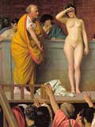

главная  персоналии
персоналии  Евн-Антиох
Евн-Антиох
главная |

Личность в историикраткая энциклопедияПроект «Личность в истории» посвящен людям — современникам грандиозных исторических событий, носителям редких качеств или людям, взгляды которых опередили их время. |
|||||
Коротко |
Статьи |
Персоналии |
Литература |
||
Евн-Антиох |
|||||
|
«Пример невольнического восстания в Сицилии широко заразил многие провинции». Орозий. V. 9. 4–8. |

Жан-Леон Жером. | ||||
Биографическая справкаЕвн-Антиох, (лат. Eunus) сирийский раб, руководитель и один из активных организаторов восстания рабов на Сицилии 137–132 гг. до н. э. Изначально носил имя Евн. После успешного начала восстания провозглашен царем с тронным именем Антиох. Восставшими были захвачены почти все крупные города центральной и восточной частей острова: Агригент, Энна, Тавромений, Мессана, Катана, и, по некоторым сведениям, даже Сиракузы. В короткий срок восставшие создали боеспособную армию и сумели разгромить несколько римских отрядов, посланных для подавления восстания. На несколько лет Сицилия превратилась фактически в независимое государство. Евн-Антиох чеканил монеты со своим именем и царским титулом. В конце концов на остров были направлены крупные военные силы римлян. Консул Публий Рупилий в упорной борьбе нанес несколько поражений восставшим. Бывшие рабы оказывали ожесточенное сопротивление, мужественно сражаясь с римскими войсками. Например, город Тавромений был захвачен только после долгой осады. Только в 132 г. до н. э. восстание было подавлено. Евн-Антиох был захвачен в плен и умер в тюрьме. Цитаты«…Царь восставших Евн назвал себя Антиохом, а мятежников — сирийцами». (Диодор. XXXIV–XXXV. 2. 24.) «Евн, после того как был провозглашен царем, приказал убить всех, кроме тех гостей его господина, которые прежде во время пиров принимали с одобрением его прорицания и давали ему порции со стола… (Диодор. XXXIV–XXXV. 2. 41.) «В Сицилии жила дочь Дамофила, молодая девушка, отличавшаяся простотою нрава и человеколюбием. Она имела обыкновение утешать рабов, наказанных плетьми ее родителями, и своей гуманностью и помощью закованным рабам заслужила их горячую любовь. Во время восстания ее прежняя доброта вызвала сострадание к ней у тех, которые раньше испытали ее доброту: не только никто не осмелился наложить на девушку руки, но все они сохранили неприкосновенной от всякого оскорбления ее юность. Восставшие рабы выбрали из своей среды надежных людей, из которых самым усердным был Гермий. Они отвели девушку в Катану и передали ее родственникам». (Диодор. XXXIV-XXXV. 2. 39.) «Евн, поставив свое войско вне обстрела, бранил римлян, говоря, что не рабы, а они являются беглецами от опасностей. Перед осажденными рабы разыграли мимикой сюжеты из восстания, в которых изображали мятеж против своих господ, хуля их надменность и чрезвычайную жестокость, приводящую их к гибели». (Диодор. XXXIV-XXXV. 2. 46.) Список литературы
|
|||||
|
{kind=link}